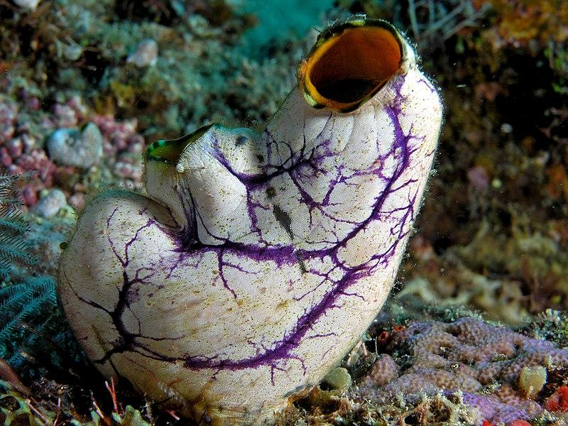

Geral sobre os Cordados
Os cordados, provenientes do filo Chordata, do reino Animalia, são os mais evoluídos de toda uma linhagem de
nove filos distintos. Eles são caracterizados por possuírem uma notocorda, que é uma estrutura cartilaginosa
que se estende ao longo do corpo, e que é responsável por dar suporte ao corpo do animal. Além disso, os
cordados também possuem uma cauda pós-anal, que é uma extensão do corpo que se estende além do ânus, e que é
responsável por auxiliar na locomoção do animal.
Os cordados são animais triblásticos, celomados e deuterostômios, ou seja, possuem três folhetos
embrionários, uma cavidade corporal e o blastóporo origina o ânus. Além disso, eles também possuem simetria
bilateral, sistema digestório completo, sistema circulatório fechado e sistema nervoso dorsal. Todas essas,
características herdadas através de diversos filos de evolução animal.
Basicamente os cordados se dividem em três subfilos: os Urocordados, os Cefalocordados e os Vertebrados.
Aqui na nossa página, nos aprofundaremos diretamente nos vertebrados, mais especificamente nos anfíbios, uma
das classes do filo Chordata.
Alguns dos cordados:

Iguana
Na imagem podemos ver uma iguana, animal cordado, vertebrado e pertencente
a classe Reptilia.

Ascídia
Aqui podemos perceber uma ascídia, especificamente um cordado presente no
subfilo dos Urocordados.
Arara
Agora aqui percebe-se uma arara, cordado alado, mais especificamente
vertebrado e pertencente a classe das aves.
Vertebrados:
No caso dos vertebrados, a notocorda é substituída pela coluna vertebral, que é uma estrutura mais complexa
e que protege a medula espinhal. Além disso, os vertebrados também possuem crânio, que protege o cérebro, e
membros articulados, que permitem uma maior locomoção e adaptação ao ambiente.
As classes dos vertebrados são: Agnatha, Chondrichthyes, Osteichthyes, Amphibia, Reptilia, Aves e Mammalia.
Cada uma dessas classes possui características únicas e adaptadas ao seu ambiente, o que as torna muito
interessantes para estudos e pesquisas científicas. Para os estudos de hoje, iremos nos concentrar nos
anfíbios. Para entender mais sobre eles clique no botão abaixo ou acesse nossas outras páginas.
Saiba Mais
Anfibios
Aqui podemos perceber uma ascídia, especificamente um cordado presente no
subfilo dos Urocordados.